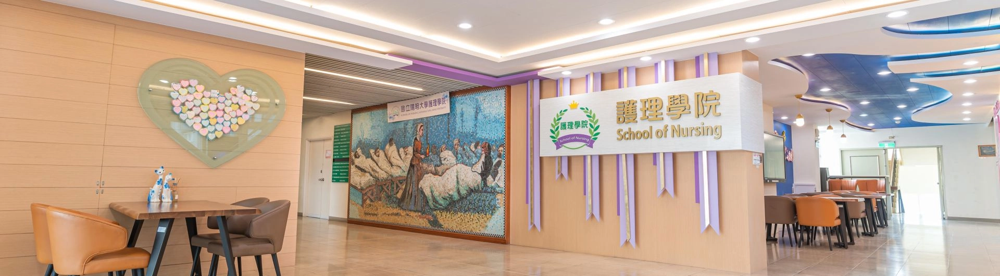

您的瀏覽器不支援JavaScript功能，若網頁功能無法正常使用時，請開啟瀏覽器JavaScript狀態
loading
跳到主要內容區塊
跳到主要內容區塊
:::
網站導覽
最新消息
展開
所有資訊
學院公告
學術活動
徵才訊息
學院活動
認識本院
展開
學院願景
學院沿革
學院組織
歷任院長
現任院長及副院長
系所簡介
展開
護理學系
臨床護理研究所
社區健康照護研究所
台灣實證卓越中心
國際交流
展開
國際交流2026
國際交流2025
國際交流2024
教學研究
展開
課程資訊
研究中心
研究成果
學院成員
展開
所有成員
護理學系
臨床護理研究所
社區健康照護研究所
學院行政成員
系所行政成員
兼任教師
榮譽事蹟
展開
教師榮譽
學生榮譽
校友表現
檔案專區
展開
所有檔案
表單下載
會議紀錄
法規辦法
繁中
arrow_drop_down
TW
EN
招生資訊
繁中
arrow_drop_down
TW
EN
常用連結
LINKS
國立陽明交通大學單一入口網
國立陽明交通大學首頁
其他連結
OTHER LINKS
學院行事曆
學院借還系統
:::

ABOUT
認識本院
ABOUT
分類項目
CATEGORIES
現任院長及副院長
學院願景
學院沿革
學院組織
歷任院長
現任院長及副院長
護理學院
簡莉盈 院長
護理學院
童恒新 副院長